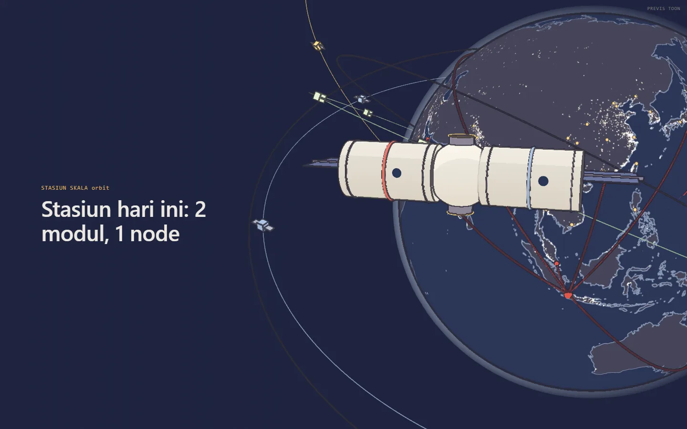
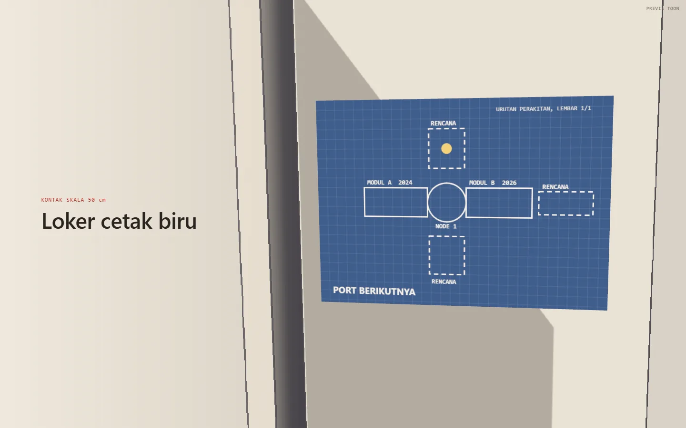

Keduanya berakhir di layar kokpit yang menampilkan situs klien. Isi belakang patch dan tahun di cetak biru masih isian.
Dinding patchPatch klien menempel di dinding Velcro node, seperti montase patch yang ikut terbang. Satu patch dibalik, lalu kamera menoleh ke layar kokpit.Album patchAstronot memegang album patch. Halaman dibalik, satu patch dibalik, lalu kamera menoleh ke layar kokpit.
Stasiun, isi proyek, dan kontak

Stasiun hari iniDua modul lab dan satu node, dua port kosong untuk modul berikutnya. 22 satelit klien di tiga bidang orbit.Isi proyekCue card di pintu loker, tablet prosedur berisi tab studi kasus.

Loker kontakCetak biru urutan perakitan dengan satu port berikutnya.